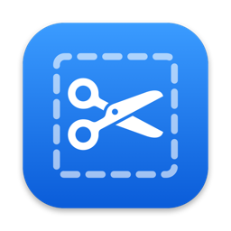

SnipSupport
Help with Snip, the screenshot-to-clipboard app for macOS.
Getting help
Found a bug or have a feature request? Open an issue on GitHub. Please include your macOS version and the steps that lead to the problem.
Shortcuts
- ⌥⇧S Capture a region. Press Space to switch to window mode, Esc or right-click to cancel.
- ⌥⇧W Capture a window.
- ⌥⇧F Capture the full screen under the pointer.
In the editor: 1–5 pick a tool, ⌘C copy, ⌘S save, ⌘Z / ⇧⌘Z undo and redo, ⌘⌫ delete, ⌘W close.
Frequently asked questions
Where is Snip after I open it?
Snip lives in the menu bar at the top of the screen. Look for the scissors icon.
Snip says it can't capture the screen.
Open System Settings → Privacy & Security → Screen & System Audio Recording, turn on
Snip, then quit and reopen it.
macOS keeps asking whether Snip may “bypass the system private window picker”.
That's normal for any screenshot app that captures without a picker. macOS asks again every
few weeks.
Where are my screenshots saved?
Every capture is copied to the clipboard. With auto-save on (the default), it's also saved
to Pictures/Screenshots. Turn auto-save off, or open the folder, from the menu bar icon.
How do I start Snip automatically?
Choose Launch at Login from the menu bar icon.
How do I uninstall Snip?
Quit Snip from the menu bar icon and move it from Applications to the Trash.